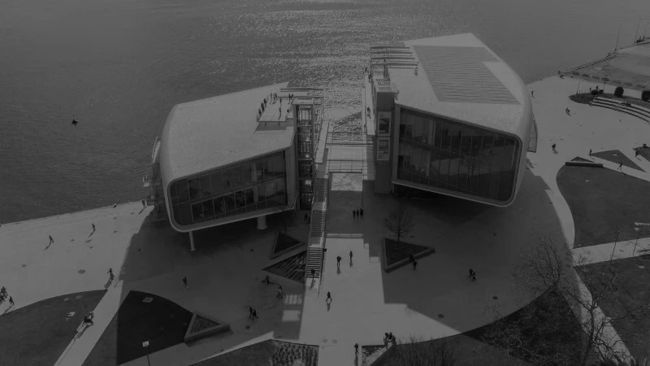
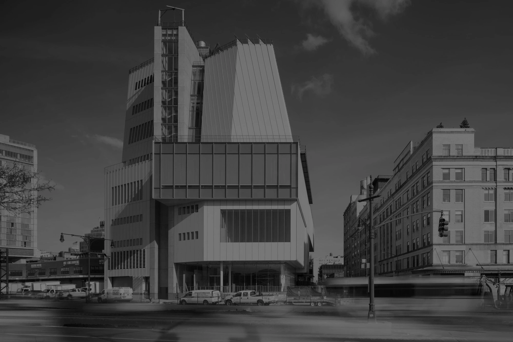

GALERIE DES OEUVRES
Renzo Piano a créé de nombreuses œuvres impressionnantes. Découvrez en exclusivité celles qui seront présentées lors de l’exposition à travers cette frise !
L'histoire des plus grandes oeuvres de Piano
1971
Le Centre Georges Pompidou, situé à Paris, est un monument architectural unique abrite une riche collection d'œuvres d'art.

Centre Georges Pompidou
1982
La Fondation Beyeler est un véritable joyau artistique, un musée offrant une expérience intime avec l'art moderne.

Fondation Beyeler
2009
The Shard, situé à Londres, est une icône architecturale majestueuse ainsi que le plus haut gratte-ciel d'Europe.

The Shard
2009
Le Pavillon de Photographie La Coste est un refuge artistique dédié à l'exploration de la photographie contemporaine.

Pavillon La Coste
2010
Le Resnick Pavilion du Los Angeles County Museum of Art est une galerie moderne dédiée à des expositions et collections.

Pavillon Resnik
2014
Le Centre d'Art Centro Botín offre des expositions innovantes et des événements culturels en bord de mer.
Centre Centro Botin
2015
Le Whitney Museum of American Art est un musée iconique de New York, avec un cadre architectural saisissant.
Whitney Museum
2020
Le Pont San Girorgio est une magnifique passerelle située à Venise, offrant une vue spectaculaire sur ses canaux.